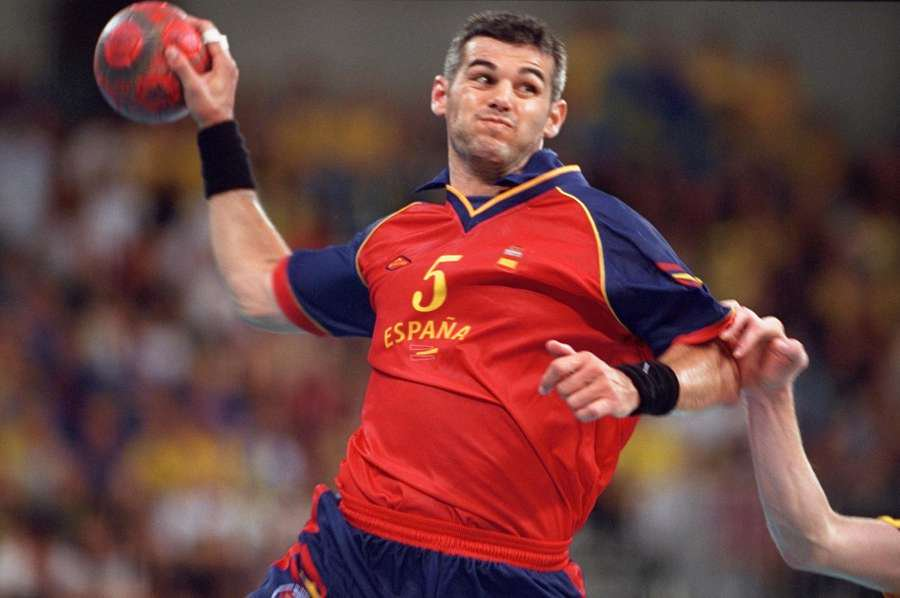
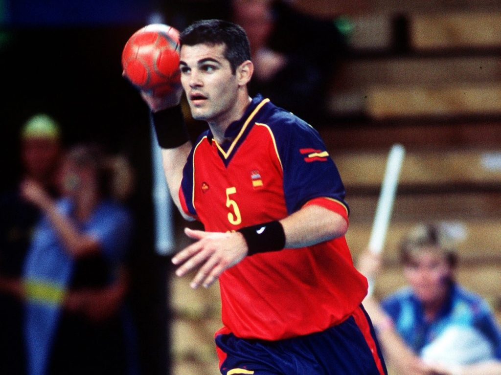

Inicio
Selección Nacional

Con España jugó 205 partidos internacionales en catorce años, con una aportación de 656 goles, con dos participaciones olímpicas (faltó a la cita de Atlanta por lesión), y tiene un bronce y medio olímpico en su casa. El medio, la parte de la cruz, se la regaló su amigo y compañero Mateo Garralda, otro de los jugadores con los que ha hecho media vida: desde la Selección juvenil, hasta los años en el Granollers, y luego en el Barcelona. El caso es que Mateo le prometió a Enric que si ganaban alguna medalla en Atlanta, la mitad sería suya. Dicho y hecho. Garralda cumplió la promesa, y gracias a un orfebre de Barcelona la serró en dos. Un buen día se presentó en el entrenamiento en el Palau con una bolsa de plástico de supermercado, y dentro iba la promesa. Cuatro años después, en Sydney, sí estuvo Enric, como en Barcelona 92, que tuvo la deferencia de regalarle a Urdangarín el último gol de su carrera: un penalti con el que se retiraba. En los Europeos, Masip ganó la plata en 1996, y el bronce en Croacia en 2000. Nunca subió al podio en unos Mundiales, aunque en el último, en Portugal 2003, estuvo cerca, pero España perdió en un partido memorable en las semifinales ante Croacia, ante la que perdió tras dos prórrogas, y Masip, pese a una cojera evidente, marcó nueve tantos, y al final, con la Selección cuarta en Lisboa, fue elegido el mejor central del campeonato.
Javier García Cuesta le hizo debutar con la Selección absoluta de España en 1989. Aquel año había logrado el subcampeonato del Mundo júnior con España, donde se encontró con otro central mítico con el que iba a coincidir como rival y como comJavier García Cuesta le hizo debuJavier García Cuesta le hizo debutar con la Selección absoluta de España en 1989. Aquel año había logrado el subcampeonato del Mundo júnior con España, donde se encontró con otro central mítico con el que iba a coincidir como rival y como compañero (en la Selección) durante toda su carrera deportiva: Talant Dujsebaev, que hasta jugó de extremo en aquella selección soviética.
